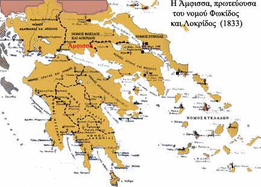

Η ¶μφισσα του νεοσύστατου ελληνικού κράτους (19ος αι.)
 Με την απελευθέρωση, η κυβέρνηση Καποδίστρια παραχώρησε δωρεάν έκταση γης στους κατοίκους των Σαλώνων, για να ανοικοδομήσουν την κατεστραμμένη από τον πόλεμο πόλη τους. Στα χρόνια του Όθωνα η πόλη ξαναπήρε την αρχαία της ονομασία, ¶μφισσα. Παρά τη δεινή οικονομική κατάσταση, στην οποία είχε περιέλθει η χώρα μετά τον αγώνα της ανεξαρτησίας, η ¶μφισσα εξελίχθηκε σε εμπορικό κέντρο της περιοχής κυρίως λόγω της θέσης της κοντά στα λιμάνια του Κορινθιακού. Παράλληλα με την ανέγερση γυμνασίου (1881), δωρεά του μεγάλου της ευεργέτη Νικολάου Γιαγτζή, μοναδικού στην ευρύτερη περιοχή μέχρι το 1921, αναδείχθηκε σε | |||